Examples#
This gallery walks through blockchainkit.proofs, one experiment per
breakthrough on the proof systems history page: the Schwartz-Zippel lemma, sum-check and
IP = PSPACE; the PCP theorem, Kilian’s arguments and Micali’s CS proofs; KZG
commitments, quadratic arithmetic programs, Groth16, trusted-setup
ceremonies and PLONK; Zerocash’s private payments; and the transparent
systems: Bulletproofs, FRI, STARKs and Halo.
Each script is self-contained and runs with
python examples/proofs/<section>/<script>.py.
Polynomials and interactive proofs#
Testing polynomial identities at random points, the sum-check protocol, and IP = PSPACE.
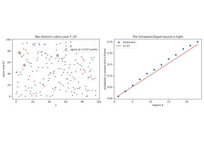
The Schwartz-Zippel lemma: polynomial identities at random points (1980)
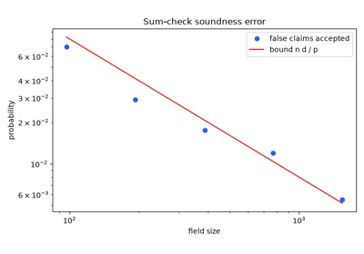
The sum-check protocol: verifying a sum of 2**n terms (1990)
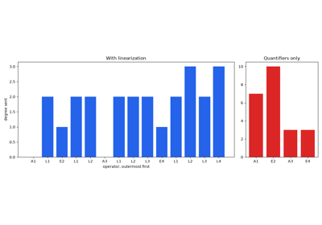
Shamir’s IP = PSPACE: proving a quantified formula (1990)
Probabilistically checkable proofs and arguments#
Proofs checked by reading a few bits, and how Merkle trees and hashing make them short.
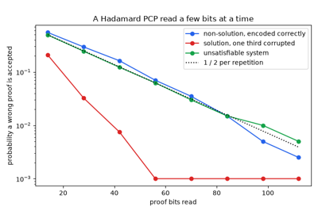
The PCP theorem: checking a proof by reading a few bits (1992)
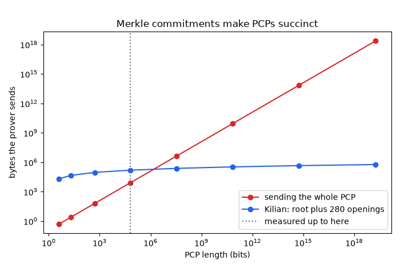
Kilian’s succinct arguments: a Merkle-committed PCP (1992)
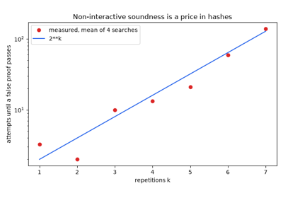
Micali’s computationally sound proofs: hashing the verifier away (1994)
Private payments#
Notes, nullifiers and a SNARK: spending a coin without revealing which one.
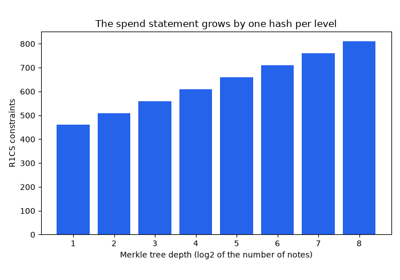
Zerocash: notes, nullifiers and private payments (2014)
Pairing-based SNARKs#
Polynomial commitments, quadratic arithmetic programs, Groth16, trusted setups, and PLONK.
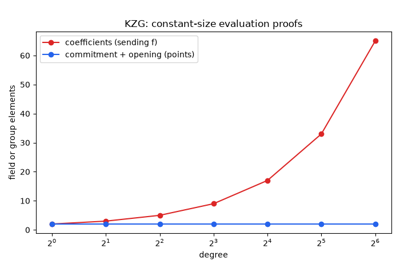
Kate-Zaverucha-Goldberg commitments: one point per polynomial (2010)
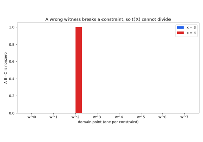
Quadratic arithmetic programs and Pinocchio: a circuit as one divisibility (2013)
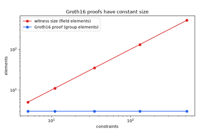
Groth16: three group elements per proof (2016)
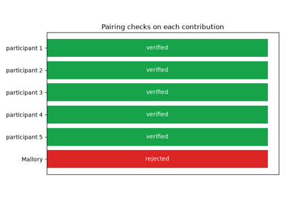
Trusted-setup ceremonies: Zcash’s parameters and the powers of tau (2016)
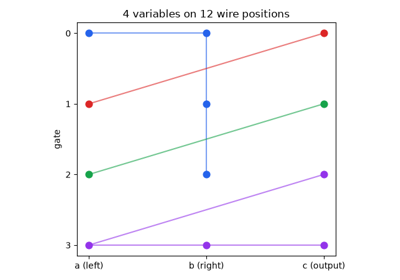
PLONK: permutation arguments and a universal setup (2019)
Transparent proofs#
Proof systems without a trusted setup: Bulletproofs, FRI, STARKs, and Halo’s recursion.
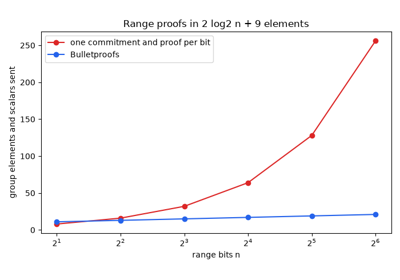
Bulletproofs: range proofs without a trusted setup (2018)
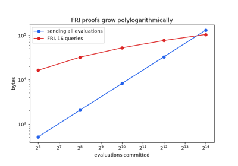
FRI: fast Reed-Solomon proximity testing (2018)
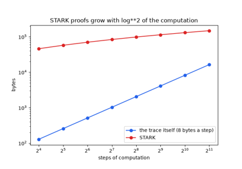
STARKs: transparent proofs of computation from hashes (2018)
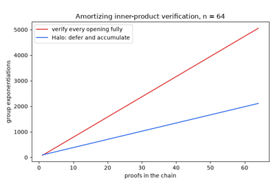
Halo: recursive proof composition without a trusted setup (2019)